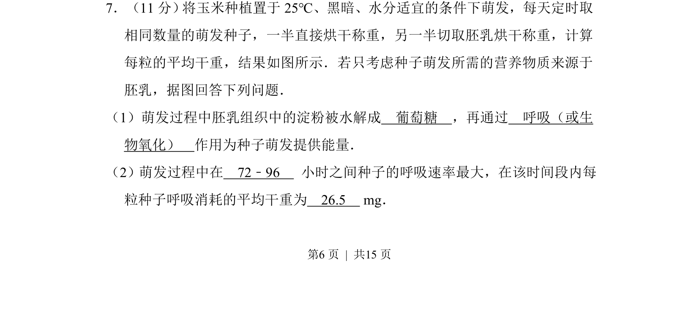
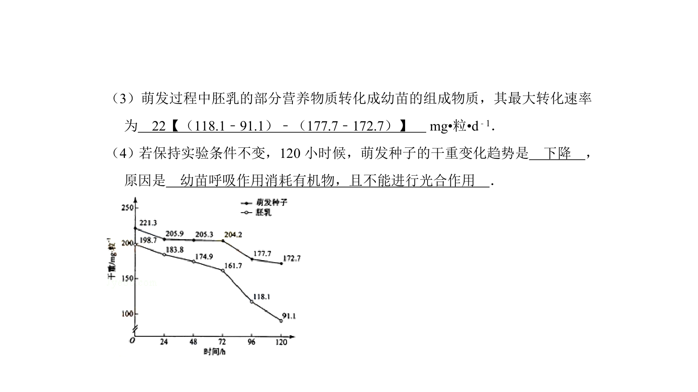
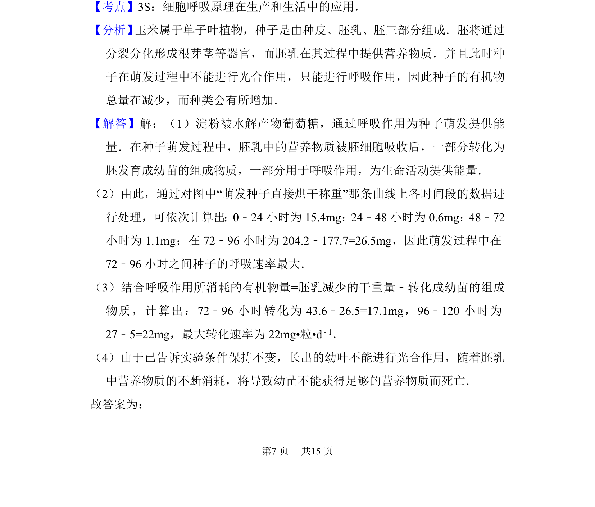
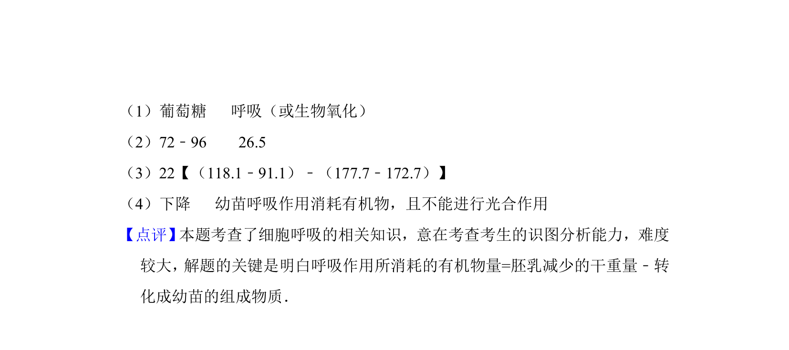

考点：胚乳 淀粉水解 细胞呼吸 干重变化


考查玉米种子黑暗中萌发时胚乳淀粉水解与呼吸消耗干重的分析。


📄 原 PDF 第 6 页：
素材/真题/吉林/2008-2024·（吉林）生物高考真题/2012年高考生物试卷（新课标）（解析卷）.pdf
7．（11分） 将玉米种植置于25℃、黑暗、水分适宜的条件下萌发，每天定时取 相同数量的萌发种子，一半直接烘干称重，另一半切取胚乳烘干称重，计算 每粒的平均干重，结果如图所示．若只考虑种子萌发所需的营养物质来源于 胚乳，据图回答下列问题． （1）萌发过程中胚乳组织中的淀粉被水解成 葡萄糖 ，再通过 呼吸（或生 物氧化） 作用为种子萌发提供能量． （2）萌发过程中在 72﹣96 小时之间种子的呼吸速率最大，在该时间段内每 粒种子呼吸消耗的平均干重为 26.5 mg．